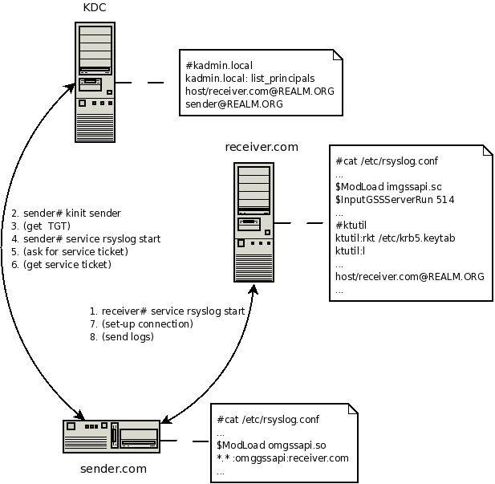

GSSAPI module support in rsyslog v3¶
What is it good for.
- client-serverauthentication
- Log messages encryption
Requirements.
- Kerberos infrastructure
- rsyslog, rsyslog-gssapi
Configuration.
Let’s assume there are 3 machines in kerberos Realm:
- the first is running KDC (Kerberos Authentication Service and Key Distribution Center),
- the second is a client sending its logs to the server,
- the third is receiver, gathering all logs.
- KDC:
- Kerberos database must be properly set-up on KDC machine first. Use kadmin/kadmin.local to do that. Two principals need to be add in our case:
- client must have ticket for pricipal sender
- REALM.ORG is kerberos Realm
- host/receiver.mydomain.com@REALM.ORG - service principal
- Use ktadd to export service principal and transfer it to /etc/krb5.keytab on receiver
- CLIENT:
- set-up rsyslog, in /etc/rsyslog.conf
- $ModLoad omgssapi - load output gss module
- $GSSForwardServiceName otherThanHost - set the name of service principal, “host” is the default one
- *.* :omgssapi:receiver.mydomain.com - action line, forward logs to receiver
- kinit root - get the TGT ticket
- service rsyslog start
- SERVER:
- set-up rsyslog, in /etc/rsyslog.conf
- $ModLoad imgssapi - load input gss module
- $InputGSSServerServiceName otherThanHost - set the name of service principal, “host” is the default one
- $InputGSSServerPermitPlainTCP on - accept GSS and TCP connections (not authenticated senders), off by default
- $InputGSSServerRun 514 - run server on port
- service rsyslog start
The picture demonstrate how things work.

rsyslog gssapi support
This documentation is part of the rsyslog project.
Copyright © 2008 by Rainer Gerhards and Adiscon. Released under the GNU GPL version 3 or higher.